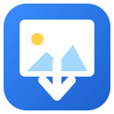

Image Downloader is ready.
Find every image on any page and save them in one click.
1
Pin the extension
Click the puzzle icon in the toolbar, then click the pin next to Image Downloader so it's always one click away.
2
Open any page with images
Scroll down to the bottom so lazy-loaded images render. Then click the Image Downloader icon in your toolbar.
3
Filter, select, download
Pick a format (JPG / PNG / WebP / …), set a minimum width to skip tiny icons, then Select all and Download. Files land in a folder named after the site.
Tips
- Set a default downloads folder in Chrome Settings → Downloads (uncheck Ask where to save each file). Otherwise Chrome will ask you once per image.
- Click 📁 in the popup to jump to your downloads folder after a save.
- Toggle Use ALT text as filename to get readable names (great for archiving research images).
- Failed images (broken links, hotlink-protected) are removed automatically — your selection stays clean.
Your data stays with you
This extension reads images only on pages you open it on. No data leaves your browser. No account, no signup, no tracking, no ads.